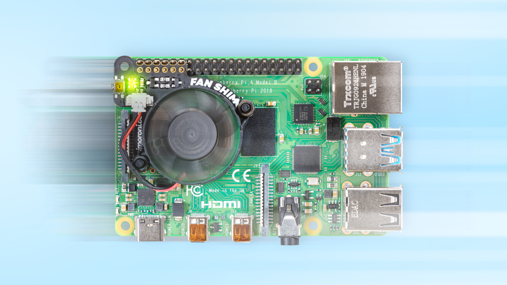

RASPBERRY PI 4 THERMALS AND FAN SHIM
June 29, 2019
11
With each generation, the Raspberry Pi packs greater performance into a same-sized package, and the Raspberry Pi 4 is one of the most significant steps up so far. The Raspberry Pi 3 was known to run hot, but the Raspberry Pi 3 B+ dramatically improved thermal performance with a metal heat-spreader on the System-on-Chip (SoC), and much better thermal dissipation through the PCB. The Pi 4's higher performance means that some of that heat creeps back.